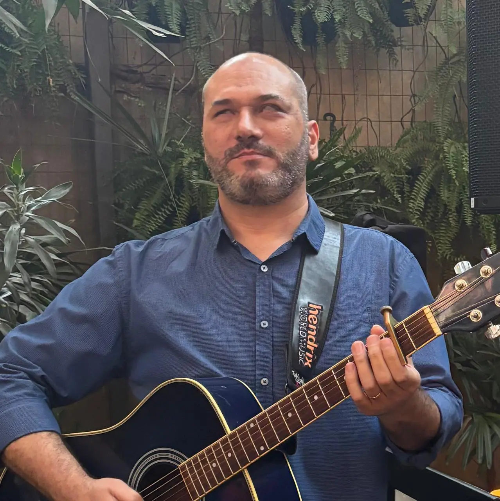

Por que a Total Música
O que faz a diferença no nosso programa
30 anos de ensino
Professor desde 1995, com passagem por escolas, bandas de diversos estilos e acompanhamento de alunos em estúdio. Uma vivência musical ampla que se reflete diretamente na qualidade das aulas.
Desenvolvimento sob medida
Nada de turma, nada de conteúdo engessado. O programa é construído a partir dos objetivos, do ritmo e do repertório de cada aluno — e evolui junto com ele.
Mais do que técnica
Música é expressão. O programa considera não só a parte técnica, mas também a confiança, a desenvoltura e o que cada aluno precisa para se sentir à vontade com o instrumento ou com a voz.
Programa de Desenvolvimento Musical Individual
Escolha seu instrumento
Aulas de Canto
Técnica vocal completa: respiração, apoio, ressonância, extensão vocal, repertório. Para iniciantes e profissionais. Abordagem que inclui aspectos psicológicos da expressão vocal.
Saiba maisAulas de Guitarra
Rock, blues, jazz, metal e mais. Técnica, teoria musical, escalas, improvisação, modos gregos e análise harmônica. Do iniciante ao avançado.
Saiba maisAulas de Violão
Técnica, harmonia e repertório personalizado. Para quem quer se acompanhar, solar ou evoluir no instrumento.
Saiba maisAulas de Contrabaixo
Contrabaixo elétrico para todos os níveis. Técnica, grooves, linhas de baixo, slap, teoria aplicada e repertório diversificado.
Saiba maisServiços
Gravação e Produção Musical
Do ensaio ao produto final. Gravação, arranjos, mixagem e masterização com acompanhamento personalizado do seu projeto.
Conheça o serviçoO professor

Prof. Jefferson Borim
Multi-instrumentista — canto, guitarra, violão, contrabaixo e viola 10 cordas — e professor desde 1995. Fundou e dirigiu a escola Central Art por 12 anos. Em 2016, criou a Total Música, onde desenvolveu um método didático próprio focado na percepção auditiva e no desenvolvimento musical completo, integrando o acolhimento emocional ao ensino. Atende alunos no Brasil e no exterior.
Conheça a história completaFerramentas gratuitas
Teoria Musical
Consulte escalas e campos harmônicos em todas as tonalidades. Interativo, gratuito e direto ao ponto.
Escalas Maiores
Todas as tonalidades no ciclo de quartas e quintas
Campo Harmônico Maior (Tríades)
Acordes de 3 notas em todos os campos harmônicos maiores
Campo Harmônico Maior (Tétrades)
Acordes de 4 notas com sétimas em todas as tonalidades
Escalas Menores
Todas as tonalidades e variações no ciclo de quartas e quintas
Campo Harmônico Menor (Tríades)
Acordes de 3 notas do campo harmônico menor harmônico
Campo Harmônico Menor (Tétrades)
Acordes de 4 notas com sétimas do campo harmônico menor
Ciclo das Quintas
Visualização interativa do ciclo de quintas e quartas
Comece agora
Pronto para a sua jornada musical?
Agende uma entrevista inicial gratuita pelo WhatsApp. Fale direto com o professor.
Falar no WhatsApp ou envie um e-mail para contato@totalmusica.com.br